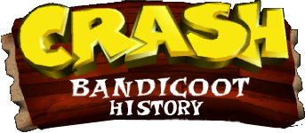

Una breve storia del paramele più amato dai videogiocatori
Tra le tante ragioni che hanno spinto Naughty Dog a realizzare Crash Bandicoot, c'era la volontà di regalare una mascotte a Sony PlayStation, una di quelle che avrebbe potuto diventare popolare come il Mario di Nintendo o il Sonic di SEGA. Non è un caso, tra l'altro, che internamente il gioco fosse conosciuto col nome di "Sonic's Ass Game" (lasciamo a voi la traduzione). Tornando a noi, Rubin e Gavin volevano ottenere ciò che Warner Bros aveva ottenuto con Taz, il ben noto diavolo della Tasmania, e cioè prendere a modello un animale esistente e poco conosciuto, per poi trasformarlo in qualcosa di completamente diverso e peculiare.
Il modello finale di Willy the Wombat vantava ben 512 poligoni ed era in grado di eseguire espressioni facciali buffe e complesse, merito dell'incredibile attenzione per il dettaglio tipica di Naughty Dog. Le movenze, le giravolte e i salti del personaggio sono stati rifiniti durante lo sviluppo dei livelli "Heavy Machinery" e "Generator Room", che richiedevano l'esecuzione di acrobazie dalla precisione millimetrica. Applicati gli ultimi ritocchi, la mascotte è stata battezzata col nome di Crash Bandicoot
Aku Aku è una maschera vodoo in legno al cui interno risiede lo spirito di un antico stregone che lo rende vivo e in grado di proteggere la terra dai malvagi come faceva quando era in vita. Ha quattro piume variopinte sulla parte superiore della maschera e un pizzetto verde sotto la bocca. Naso labbra e sopracciglia sono marroncino.
Il malvagio dottor Neo Cortex, insieme al Dr. Nitrus Brio, ambisce a conquistare il mondo. Il Dr. Cortex sottopone agli esperimenti Crash che tuttavia viene considerato un fallimento perché "troppo buono": riesce a fuggire dal castello saltando dalla finestra, ma purtroppo la sua ragazza, Tawna, viene fatta prigioniera. Crash si risveglia sulla spiaggia di N. Sanity Beach, da lì inizia il suo cammino verso il castello di Cortex per salvare Tawna.